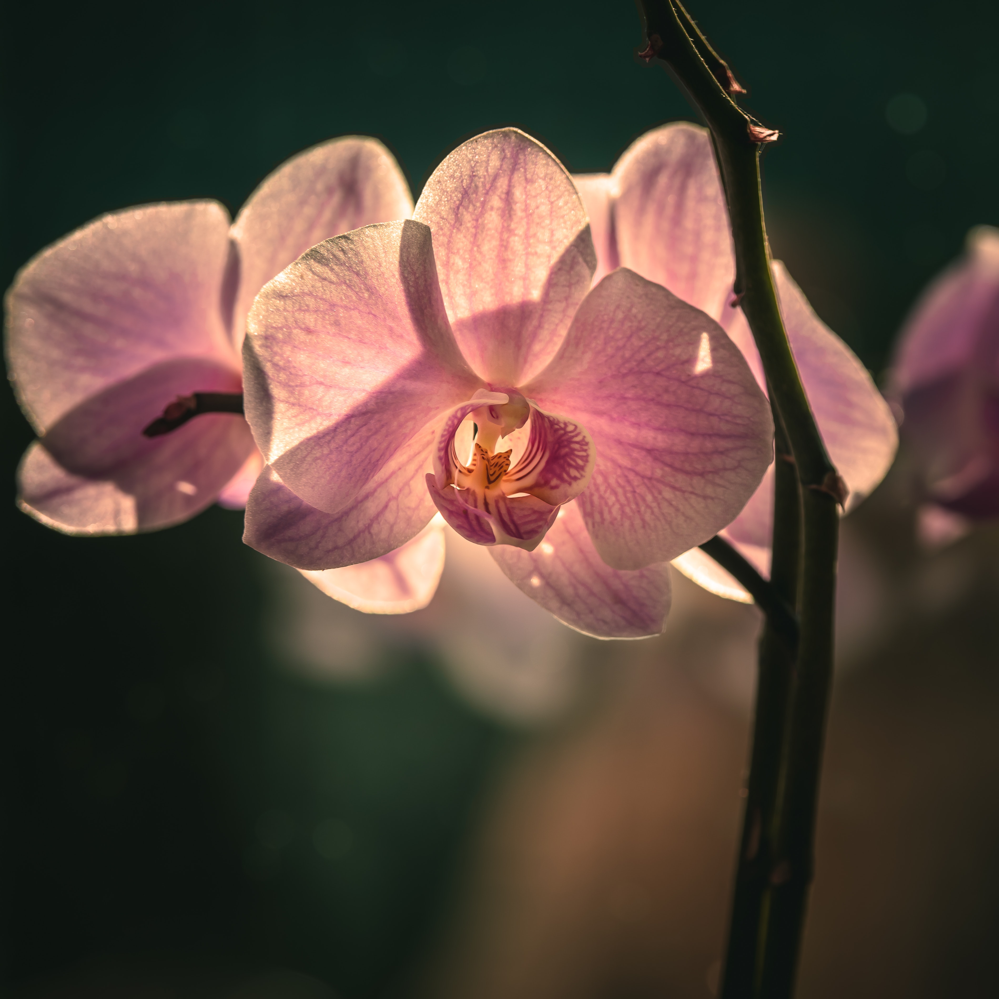
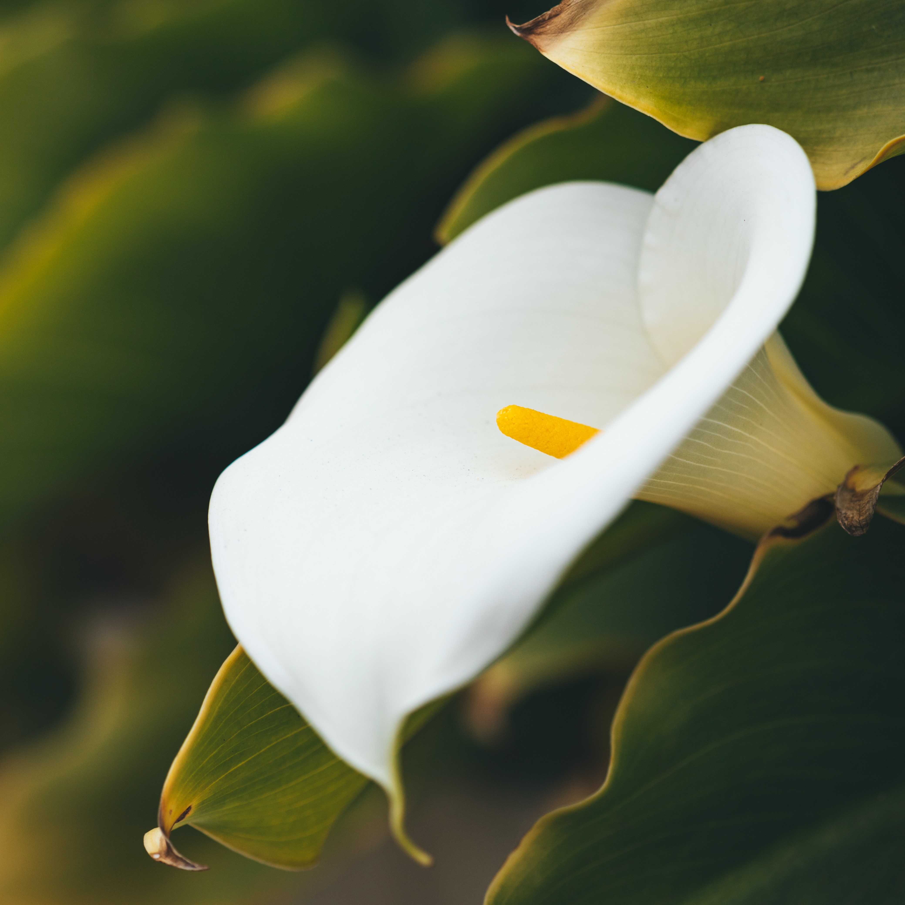
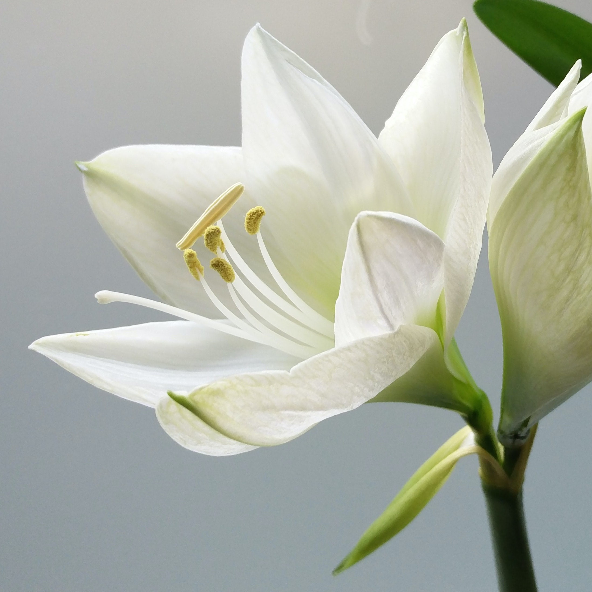

ORHID

PEACE LILY

ANTHURIUM

House plants are plants that are grown indoors in homes and other buildings for ornamental, decorative, or air-purifying purposes. They are typically grown in containers or pots and placed on windowsills, tables, or other surfaces..